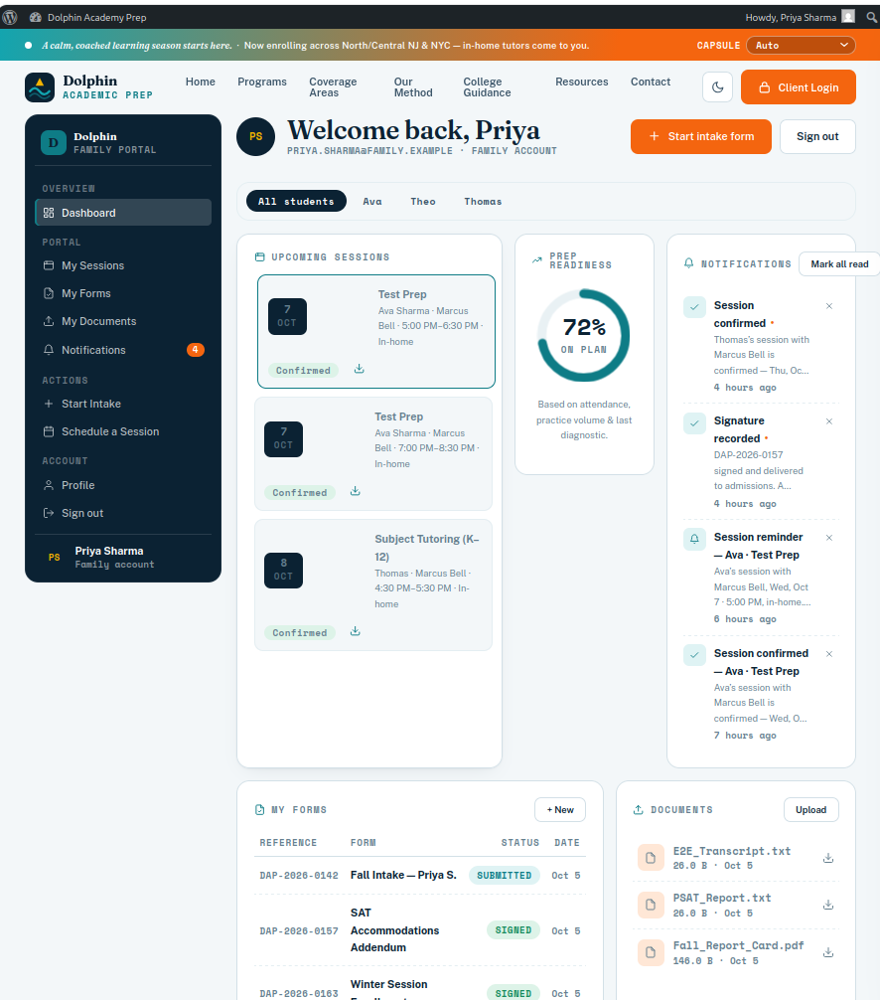
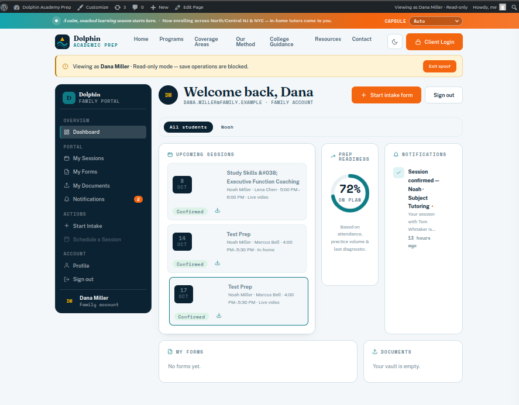
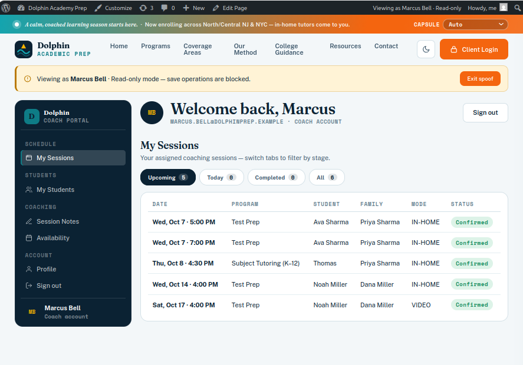
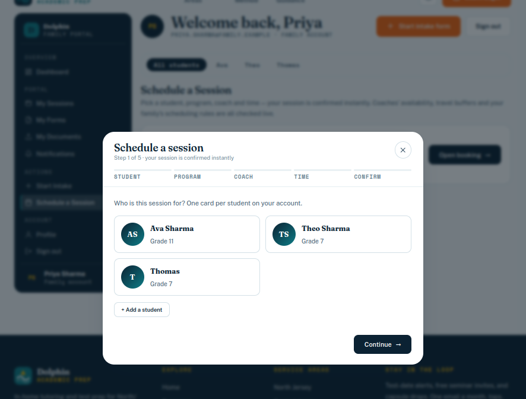
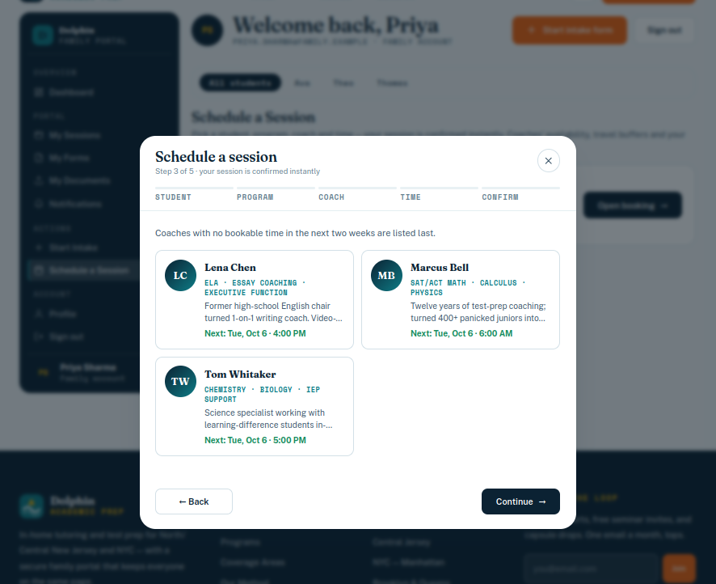
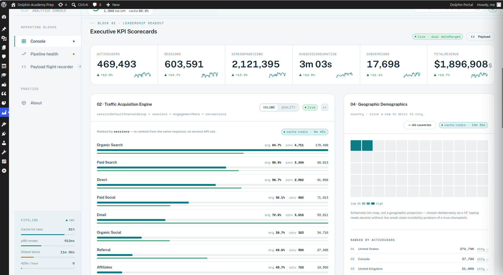
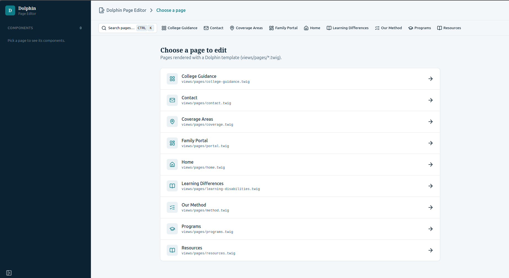
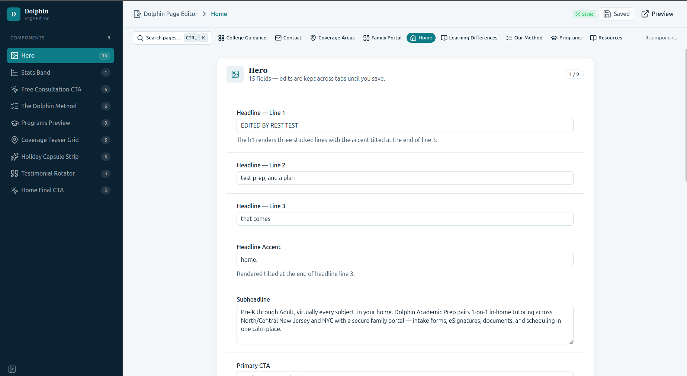
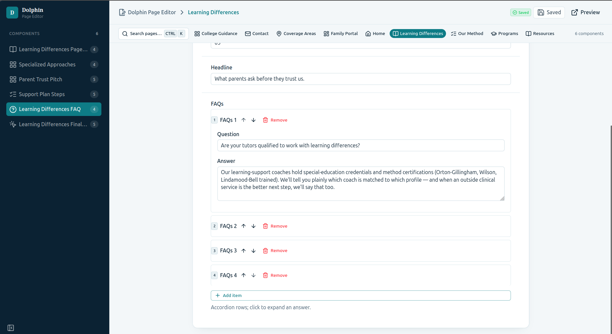

§1 · The Audit
A fifteen-year-old foundation with a plugin collection on top.
The engagement began with a forensic audit of the live site. What it found: a Twenty Ten theme — WordPress's default from 2010 — with Elementor + Essential Addons layered on top for page building, and no child theme, meaning every core update risked overwriting customizations. Beneath the theme sat ten or more active plugins, each an update cycle and a compatibility surface the owner inherited without understanding. Contact forms ran through VFB Pro with no encryption at rest — student data transmitted and stored in the clear. Yoast SEO v28.4 was installed, but there was nothing to optimize: service descriptions were WYSIWYG paragraphs, contact details were inline text, and FAQs lived siloed in the Ultimate FAQ plugin. The blog contained roughly sixty auto-posted tweets from 2012–2014 reformatted as articles under categories like "SOCIAL MEDIA STREAMS" and "WORD OF THE DAY" — a maintenance surface delivering zero business value.
| Dimension | Before — Audited | After — Rebuild |
|---|---|---|
| Theme | Twenty Ten (2010) + Elementor + Essential Addons, no child theme, pre-HTML5 markup | Timber v2 + Twig, version-controlled templates |
| Plugins | 10+ active — each an update cycle and compatibility surface | 4–5 purpose-built modules (cache, security, backup, portal, admin) |
| Forms | VFB Pro — no encryption at rest, no structured review workflow | Encrypted portal forms — AES-256 at rest, audit trails |
| SEO | Yoast installed, nothing structured to optimize — zero geo-data, zero schema.org | Schema.org generated from CPT data, six canonical coverage URLs |
| Blog | ~60 auto-posted tweets (2012–2014) formatted as posts | Curated editorial content with schema.org Article markup |
| Portal | None — no auth, no e-signatures, no document vault | Family / coach / admin portal with spoof mode |
| Hosting | Bluehost/Newfold — host-injected scripts the client can't control | SiteGround or WP Engine, client-owned account, Git deploys |
§2 · Architecture
Eight decisions. One coherent platform.
Every structural choice in the rebuild is documented in a separate Architecture Decision Record with alternatives considered, rationale, and tradeoffs. What follows is the highlight reel — the strongest decisions first.
Timber v2 + Twig over Elementor — no page builder
PHP controllers prepare data; Twig templates render it. Templates are readable by any developer
inheriting the codebase — open single-service.twig and read the structure directly. Zero
page-builder lock-in; the client owns every file in their hosting account.
Custom OOP modules over Yoast, MonsterInsights, and VFB Pro
Six third-party plugins replaced by purpose-built code. Yoast's meta tags, sitemaps, and schema generate
from Carbon Fields data the site already owns; MonsterInsights' gtag snippet is a single
wp_head callback; VFB Pro becomes an encrypted form engine. What remains as plugins is
infrastructure — cache, security, backup — not features.
Full rebuild over incremental fix
The audit's central call. Incremental patches would burn 60–70% of rebuild effort while leaving the 2010 markup, the Elementor dependency, and the absent portal unresolved. The rebuild retires the debt in one motion.
Custom post types + Carbon Fields over WYSIWYG pages
Services, coverage areas, FAQs, and team members become structured, queryable data. Field definitions live in version-controlled PHP — no GUI drift, no JSON sync step. Schema.org markup renders from the same fields: no duplication, no drift.
Coverage area taxonomy over city pages
One coverage_area taxonomy, six region terms, one Twig template. Canonical URLs generate
from terms; schema.org LocalBusiness renders on every region page. Adding a city is a repeater entry, not
a new page to maintain.
Dedicated portal plugin over form-builder SaaS
Authentication, AES-256 encrypted submissions, canvas e-signatures with audit trails, a document vault outside the web root, and dual notifications — one auditable codebase owning the full data lifecycle. FERPA-minded by design, even though FERPA doesn't technically apply to tutoring companies.
Vue 3 admin panel over default wp-admin
Purpose-built dashboards per content type, loaded as a deactivatable plugin. If it is ever switched off, every field remains editable through Carbon Fields' native metaboxes — the panel is a convenience layer over the data model, not the data model itself.
Holiday capsules via CSS custom properties — zero server dependencies
Fourteen-plus observances themed by three CSS variables and a client-side calendar. No plugin, no cron, no database queries. The system fails to the default brand, never to a white screen.
The remaining decision — hosting and deployment — moves the site from Bluehost/Newfold (whose platform injects MutationObserver code on every page, host-level behavior the client never requested) to SiteGround or WP Engine with the account in the client's name, Git-based deployment, server-level caching, and verified backup restores.
§3 · The Portal System
The centerpiece: four CPTs, three roles, zero double-books.
The portal is not a form plugin configured through a GUI — it is a custom
dolphin-portal plugin that owns the full data lifecycle. Four custom post
types (dolphin_session, dolphin_form_entry,
dolphin_document, dolphin_notification) plus a student model
linking every record to a specific student. Custom REST endpoints under
/dolphin/v1/. Role-based dashboards rendered server-side through Timber —
the portal lives on the same WordPress install as the marketing site, sharing the same
design tokens and data layer.

Three roles, three dashboards.
| Role | Reads | Writes |
|---|---|---|
| dolphin_family | Own sessions, forms, documents, notifications | Book and reschedule sessions, upload documents, sign forms |
| dolphin_coach | Assigned sessions, assigned students | Session notes (own sessions only), availability settings |
| dolphin_admin | Everything | Everything — plus spoof mode, read-only, view-as any user |
Spoof mode is enforced at the REST API layer, not the UI. When an admin activates spoof mode, a flag is stored in user meta and every REST endpoint checks it before executing a write. The admin sees exactly what the target user sees — their sessions, their forms, their documents — and nothing more. All POST, PUT, and DELETE requests return 403 while spoofing. Zero accidental writes. Zero audit trail contamination.


The booking flow.
A family books in five steps: student, program, coach, date and time, confirm. Programs
filter by the student's grade — a family cannot book SAT Prep for a seventh grader.
Confirmed sessions generate an .ics calendar file with Google Calendar and
Outlook links.


Concurrency: two families, one slot, zero double-books.
Two families click "Book" at the same time for the same coach at the same slot. Two
requests arrive simultaneously at POST /dolphin/v1/booking. The system must
let exactly one through and reject the other with a clear message.
The first approach — WordPress transients — failed. Set a transient,
check it on the next request. The problem: WordPress's per-request object cache. A
get_option() miss gets cached in memory, so the second concurrent request
believes the lock doesn't exist. Both requests succeed. Double-book.
The fix: raw SQL INSERT IGNORE. Bypass the object cache
entirely and write directly to wp_options. The lock holder inserts a row
with a 10-second expiry; the loser's insert is silently ignored by the database's own
atomicity. One request returns 200 with a session ID and
.ics URL. The other returns 409 — "That time was just
taken. Please pick another." Every time.
curl & curl & wait. One consistently returns 200; the other
consistently returns 409. 32/32 Playwright E2E tests passing, including
concurrent booking, availability validation, spoof enforcement, and the full intake
wizard. Every assertion maps to a business rule: a family cannot book SAT Prep for a
7th grader; a coach cannot write notes on an unassigned session; an admin in spoof mode
cannot submit an intake form.
Slot generation: 15-minute increments, buffer-enforced, UTC-safe.
The GET /dolphin/v1/availability-slots endpoint walks each coach
availability block in 15-minute increments. A candidate slot qualifies only if it
satisfies all six conditions:
| # | Condition | Enforcement |
|---|---|---|
| 1 | Full session duration fits inside the block | Slot end ≤ block end |
| 2 | Minimum lead time respected | Slot start ≥ min_lead_time_minutes from now |
| 3 | No overlapping session | Existing sessions with status confirmed / pending / rescheduled |
| 4 | Buffer applied on both sides | Travel buffer for in-person, standard buffer for video |
| 5 | Date not blocked | Coach blocked-dates list |
| 6 | Within booking horizon | Configurable forward window |
All comparisons run in UTC; results return as HH:MM in site timezone plus
ISO-8601 UTC, capped at 40 slots. The compute-heavy work stays server-side — the client
never does timezone math.
Encryption & compliance.
FERPA applies to institutions receiving federal funding — not private tutoring companies. The portal is built to FERPA principles anyway, because the families using it have the same expectations:
- AES-256 encryption at rest for all form submissions, keyed from WordPress salts.
- Files stored outside the web root, referenced by UUID rather than filename, MIME-checked on upload.
- Audit trails — every signature, upload, and submission recorded with timestamp and user; post revisions provide immutable history.
- Data portability — families can request a structured export; no proprietary lock-in.
- Key rotation — a WP-CLI command re-encrypts old submissions without data loss if the key is ever compromised.
§4 · The Analytics Console
Six reporting blocks. Every number traceable. MonsterInsights replaced.

A standalone dolphin-analytics plugin connects directly to the
GA4 Data API v1, caches responses in WordPress transients, and renders
six reporting blocks server-side through Timber. The design philosophy: every number
carries a freshness label, every visualization links to the runReport
payload that produced it, and color is reserved strictly for state — up, down, stale,
throttled — never decoration.
| Block | What It Reports |
|---|---|
| 01 · Executive KPI Scorecards | Six headline metrics with period-over-period deltas, sparklines, and deuteranopia-safe delta encoding (shape + sign + color). |
| 02 · Traffic Acquisition Engine | Channel volume vs. quality — a toggle re-ranks channels from the same response, exposing big-but-shallow sources. |
| 03 · Content Engagement Tracker | Top 25 landing pages with hard pagination — the table can never spike quota by being scrolled. |
| 04 · Geographic Demographics | Country-level distribution with city drill-through, rendered as a schematic bin map with a ranked sidecar. |
| 05 · Filtered Conversion Funnel | Dolphin-specific events — program_viewed → consultation_requested → intake_submitted → session_booked — with the filter chain visible in the header. |
| 06 · Quota & Cache Governance | Hourly token consumption, cache hit ratio, per-block freshness ledger. The one block leadership can't turn off. |
Signature interactions.
- Delta Scrubber. A draggable, resizable date-range band on a 365-day track with a dashed
comparison window. Both windows travel in a single
dateRangesarray, so the comparison pair comes back from GA4 in one call. A cache-coverage strip under the band teaches API cost as a felt experience — small moves resolve against cache and cost nothing; large moves commit live requests. - Command Palette (⌘K). Indexes every metric, dimension, property, payload recording, preset, and action — the fastest path from any number to its block.
Mock/live dual-mode. The REST endpoint returns an identical JSON shape whether the numbers came from Google or from a deterministic mock engine (mulberry32, bit-exact with the prototype's JavaScript PRNG). The client never knows which mode is active — demo-ready without credentials, production-ready with them.
§5 · The Page Editor
Vue 3 + Carbon Fields. Gutenberg replaced.

The page editor is a Vue 3 + Vite application built on the NuxtUI component library. Carbon Fields page-level containers define the editable fields for each page component; the editor reads those container schemas through a custom REST endpoint and renders them as structured forms. Nothing is freeform — a Hero component exposes its headline, subhead, and CTA fields; an FAQ accordion exposes its repeater.


The layout is consistent across every page: component tabs in the left sidebar, structured form fields in the main content area, and a page selector landing screen for navigating between pages. A staff member picks a page, picks a component, edits fields, saves. No block canvas, no layout decisions, no WYSIWYG archaeology.
The editor uses the site's own design tokens — the same teal/navy palette, the same Public Sans and Fraunces stack. The tool that edits the site looks like the site it edits. Staff never context-switch between a WordPress admin aesthetic and the brand they are maintaining.
§6 · Content & SEO Architecture
Six canonical URLs where zero existed.
The business serves in-home tutoring across North/Central New Jersey and NYC — a
multi-county, two-state territory — yet the audited site had zero location-based
landing pages and no structured geo-data anywhere in the markup. A parent
searching "tutoring in Montclair NJ" had no path to the site. The rebuild replaces flat
geographic content with a coverage_area taxonomy: six coverage
regions, each a term carrying counties, ZIP ranges, a unique description, and a
featured-cities repeater. A single Twig template renders every region page with
schema.org LocalBusiness markup — areaServed populated
from the counties field — and canonical URLs generated from the taxonomy
terms: /coverage/north-jersey/, /coverage/westchester-rockland/,
and so on. City-specific landing content with unique metadata comes from the repeater —
Montclair, Hoboken, Scarsdale, Park Slope — without multiplying URLs.
The editorial workflow.
Staff manage structured fields, not WYSIWYG content blocks. Updating a service description goes from "Pages → All Pages → find the page → edit a WYSIWYG block → hope the phone number widget still looks right" to "Practice Manager → Services → click the service → edit the description field → Save." The origin story is the same discipline proven at CAS: coaching content teams onto structured, guarded workflows cut IT helpdesk ticket volume by 60%. The Dolphin editorial interface applies the identical principle — role-appropriate surfaces, publishing guardrails, and structured data that cannot be formatted into breakage.
The plugin replacement table.
| Retired Plugin | Replaced By |
|---|---|
| Yoast SEO v28.4 | Schema.org + meta generated from CPT data; XML sitemap via template + rewrites |
| MonsterInsights v11.2.0 | GA4 analytics console — six blocks, quota governance, payload provenance |
| VFB Pro | Encrypted portal forms — AES-256 at rest, audit trails |
| Elementor + Essential Addons | Timber/Twig templates, version-controlled |
| Ultimate FAQ | Custom accordion component — FAQ CPT with schema.org markup |
| Black Studio TinyMCE | Structured fields — Carbon Fields theme options |
§7 · The Holiday Capsule System
Three CSS variables. Fourteen observances. Zero servers.
The brief requested holiday-themed page looks for 14+ observances —
Election Day, Diwali, Thanksgiving, Winter Holidays, Lunar New Year, and more —
scheduled a year in advance. The build: three CSS custom properties
(--cap-a, --cap-b, --cap-glow) themed by a
client-side JavaScript calendar that auto-detects the current date against a holiday
schedule. Changing a holiday means changing three hex codes in a JSON object. No
plugin, no cron, no database queries, no server dependencies of any kind.
Motif animations — falling leaves, drifting snow, swaying petals,
floating diyas, stars, lanterns, sparks — are pure CSS keyframes on styled
<span> elements, every one gated behind
prefers-reduced-motion. Staff control lives on the front
end: a dropdown in the header ribbon for manual override, and a gallery strip on the
homepage for previewing any capsule live (session-only — refresh returns to the
calendar's automatic selection).
Cross-component coordination runs through the applyCapsule() event bus:
the capsule ribbon, the hero greeting, the motif stage, and the capsule gallery all
listen for the same event and re-theme in lockstep. One function call, four surfaces,
zero drift.
The failure mode is the quietest part of the design: if the calendar misses, the date comparison falls through to the default capsule and the site renders with its standard brand. No PHP errors, no white screen, no "holiday plugin requires update" admin notice. The system fails to default — never to broken.
§8 · Key Metrics
The rebuild by the numbers.
| Metric | Result |
|---|---|
| Plugins replaced with custom code | 6 — Yoast, MonsterInsights, VFB Pro, Elementor + Essential Addons, Ultimate FAQ, Black Studio TinyMCE |
| Custom post types | 4 — session, form_entry, document, notification |
| User roles | 3 — family, coach, admin — with read-only spoof mode |
| Booking flow | 5 steps with atomic concurrency protection — one 200, one 409, every time |
| E2E tests | 32/32 Playwright tests passing |
| Analytics console | 6 reporting blocks on the GA4 Data API v1, mock/live dual-mode |
| Page editor | Vue 3 + Vite + NuxtUI, replacing Gutenberg |
| Holiday capsule system | 14+ observances, zero server dependencies |
The through-line of every number above: the client goes from maintaining a plugin collection to owning a software product. Every module can be audited, versioned, and deactivated independently with zero data loss. The business goes from maintaining a website to operating a platform.